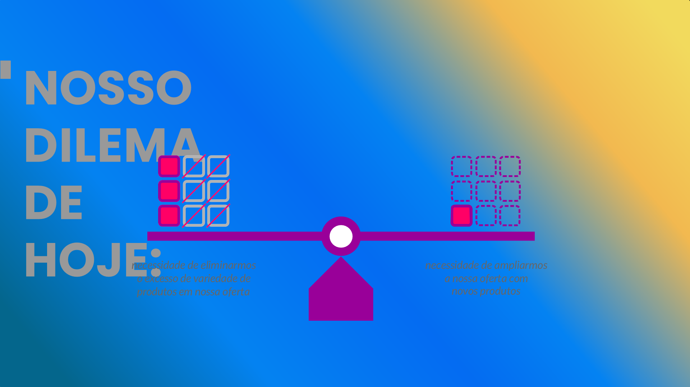
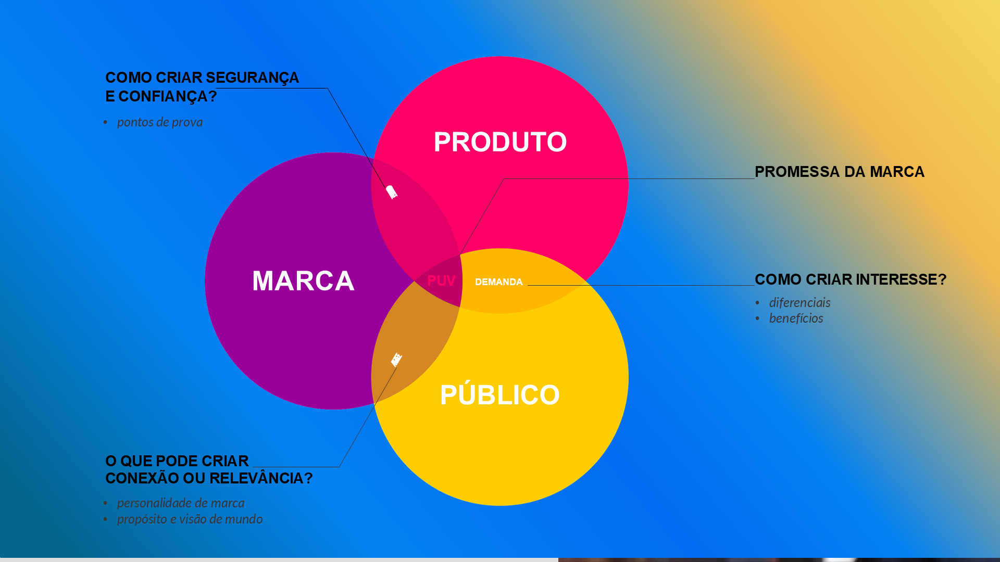
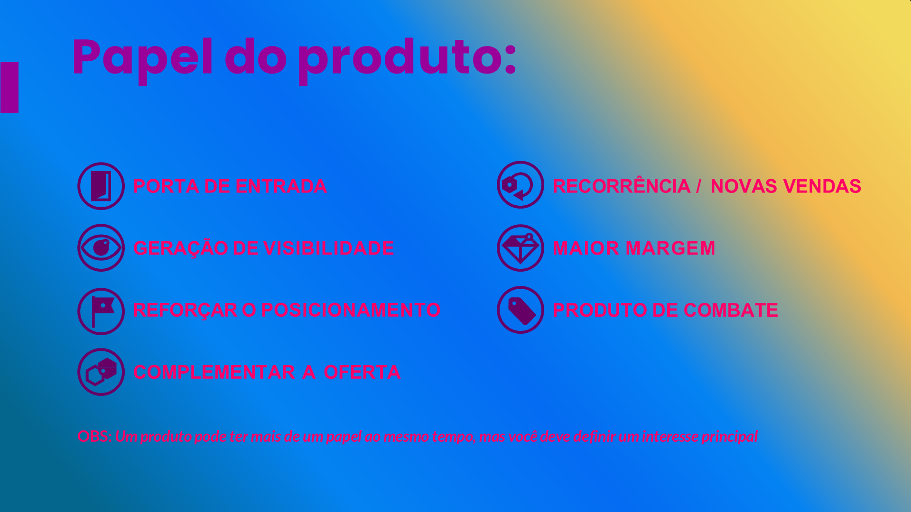
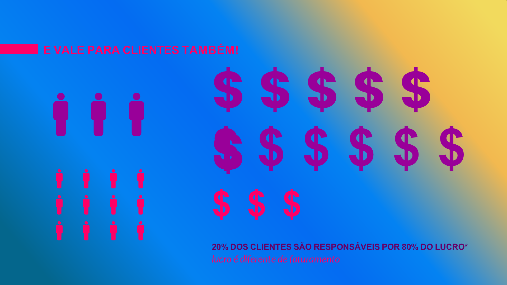
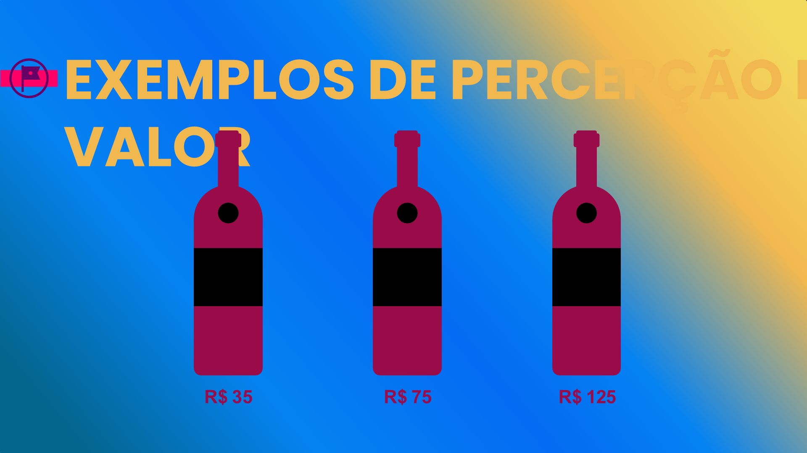
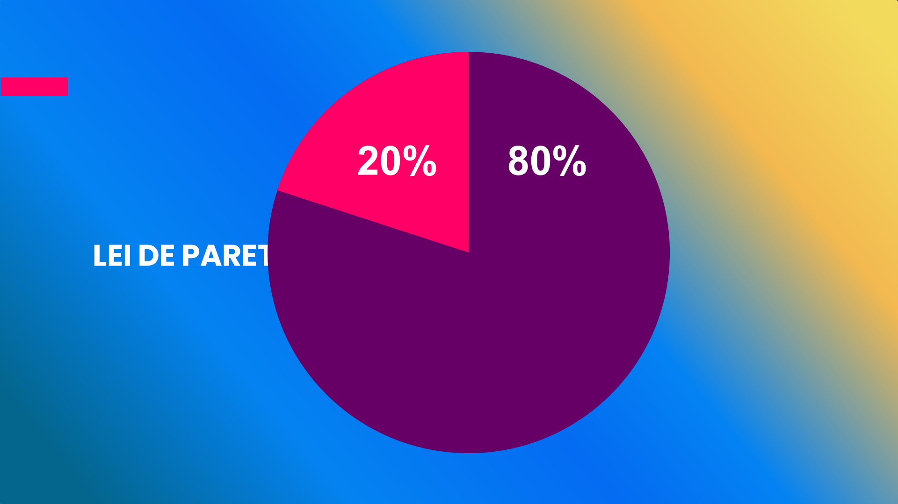

flowchart TB
A["EXPERIÊNCIA<br/>Visita à fazenda, degustação,<br/>agroturismo, eventos"]
B["SERVIÇO<br/>Assistência técnica, consultoria,<br/>treinamento, pós-venda"]
C["PRODUTO<br/>O bem físico: café, leite,<br/>fruta, semente, carne"]
A --> B --> C
style A fill:#1b5e20,color:#fff
style B fill:#388e3c,color:#fff
style C fill:#66bb6a
9 Estratégia de Produtos e Portfólio no Agro
O que você vende e como organiza sua oferta impacta diretamente a força da marca. Neste capítulo, abordaremos a gestão estratégica do portfólio de produtos e serviços no agronegócio.
9.1 O dilema do portfólio

Todo negócio agropecuário enfrenta, em algum momento, um dilema fundamental entre a necessidade de ampliar a oferta para atender mais demandas e crescer e a necessidade de simplificá-la para ter clareza, foco e eficiência.
Ambas as pressões são legítimas. A gestão estratégica de produtos busca o equilíbrio: oferecer o suficiente para atender o mercado, sem oferecer tanto que dilua a identidade da marca e a capacidade de entrega.
9.2 Produto como base do posicionamento

Na jornada de marca que desenhamos (Capítulo 3), o produto é o alicerce. Antes de definir público, diferenciação e posicionamento, é preciso ter clareza sobre o que vendemos.
Três perguntas orientadoras conduzem essa reflexão. Primeiro, o que exatamente vendemos (lista completa de produtos e serviços). Segundo, qual o papel de cada item, já que nem todo produto tem a mesma função no negócio. Terceiro, como estão organizados, ou seja, se existe lógica, hierarquia e complementaridade.
9.3 A visão ampliada do produto
No agro, “produto” vai além do bem físico. Considere a oferta completa:
Marcas fortes no agro raramente vendem apenas o produto físico. Elas “servicificam” o produto (adicionam serviços) e “experiencificam” ambos (criam experiências memoráveis).
Exemplos de ampliação:
| Produto base | + Serviço | + Experiência |
|---|---|---|
| Café em grãos | Tutorial de preparo personalizado | Visita à fazenda com colheita participativa |
| Queijo artesanal | Assinatura com curadoria mensal | Oficina de harmonização queijo e vinho |
| Mudas frutíferas | Acompanhamento agronômico digital | Workshop de poda e manejo na propriedade |
| Carne bovina | Corte personalizado para cada cliente | Tour pelo sistema de criação a pasto |
9.4 Papéis dos produtos no portfólio

Em um portfólio com mais de um produto, cada item deve ter um papel claro. Os principais papéis são:
9.4.1 Produto-bandeira
O produto que define a marca. É o mais conhecido, o que gera a principal receita e o que o público associa imediatamente ao nome da marca. Deve receber a maior atenção em qualidade e comunicação.
Exemplo: O café especial da Fazenda X, é o que ela é conhecida por produzir.
9.4.2 Produto de entrada
Um produto de menor valor que permite ao cliente experimentar a marca sem grande compromisso financeiro. Funciona como porta de entrada para produtos de maior valor.
Exemplo: Sachê de amostra de café, miniqueijo para degustação, mel em embalagem de 100ml.
9.4.3 Produto de margem
Produtos com margem de lucro proporcionalmente maior, que sustentam a saúde financeira do negócio.
Exemplo: Café torrado e moído (versus café em grão verde que tem margem menor).
9.4.4 Produto de recorrência

Gera fidelização e previsibilidade de receita por meio de compra repetida.
Exemplo: Assinatura mensal de cesta de hortifrúti, clube de café, leite por entrega semanal.
9.4.5 Produto de imagem

Pode não gerar grande volume de venda, mas constrói percepção de qualidade, sofisticação ou inovação para a marca como um todo.
Exemplo: Lote especial de café microlot premiado, edição limitada de cachaça envelhecida, queijo maturado por 24 meses.
9.5 A regra 80/20 no portfólio agrícola

Na maioria dos negócios agropecuários, 20% dos produtos geram 80% da receita. A análise 80/20 revela quais produtos são essenciais (os 20% que geram 80% da receita, que devem ser protegidos e fortalecidos), quais são acessórios (que merecem avaliação sobre sua contribuição para a marca ou consumo de recursos) e quais devem ser descontinuados (pois produzir algo que não vende e não contribui para a marca é desperdício).
AvisoArmadilha do excesso
A tentação de “quanto mais produtos, melhor” é uma das armadilhas mais comuns no agro. O excesso de variedade aumenta a complexidade operacional, dilui a identidade da marca (“faz um pouco de tudo”), dificulta a decisão do comprador e reduz a profundidade de excelência em cada produto.
Muitas vezes, cortar produtos do portfólio fortalece a marca, a margem e a operação.
9.6 Ciclo de vida do portfólio
Todo portfólio é dinâmico. Produtos nascem, crescem, amadurecem e eventualmente são descontinuados. A gestão consciente desse ciclo inclui:
Manter e fortalecer os produtos que sustentam receita e reputação e que estão alinhados com o posicionamento da marca.
Lançar produtos que atendem demandas emergentes do mercado, que reforçam o posicionamento (por exemplo, uma linha premium) e que servem como entrada para atrair novos clientes.
Descontinuar produtos que saíram do foco estratégico, que apresentam margem negativa sem contribuição para a marca ou que confundem o mercado sobre o que a marca é.
Inovar por meio de melhorias nos produtos existentes, novas apresentações ou formatos e integração de serviços e experiências.
9.7 Exercício prático, Análise de portfólio
9.7.0.1 🌿 Ferramenta: Mapa de Portfólio Agro
Passo 1, Liste todos os produtos/serviços atuais:
| # | Produto/Serviço | % da receita | Papel na marca | Situação |
|---|---|---|---|---|
| 1 | ||||
| 2 | ||||
| 3 | ||||
| 4 | ||||
| 5 |
Passo 2, Avalie cada um:
- Está alinhado com o posicionamento desejado?
- Gera margem positiva?
- Contribui para a reputação da marca?
- O público reconhece e valoriza?
Passo 3, Decida:
- Quais manter e fortalecer?
- Quais descontinuar?
- Qual lançamento faz mais sentido?
- Como adicionar serviço ou experiência ao produto principal?
Passo 4, Defina o produto-bandeira:
- Qual produto melhor representa a marca?
- Ele está recebendo a devida atenção em qualidade e comunicação?